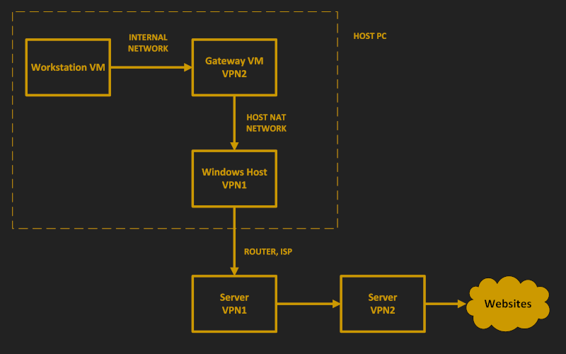
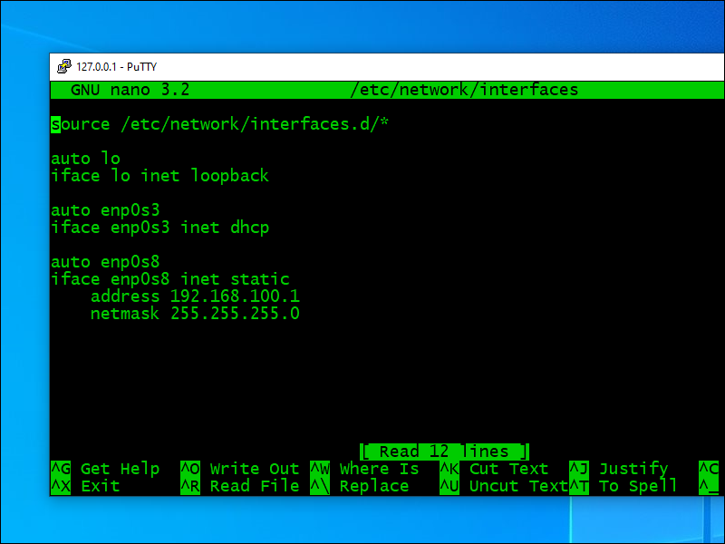
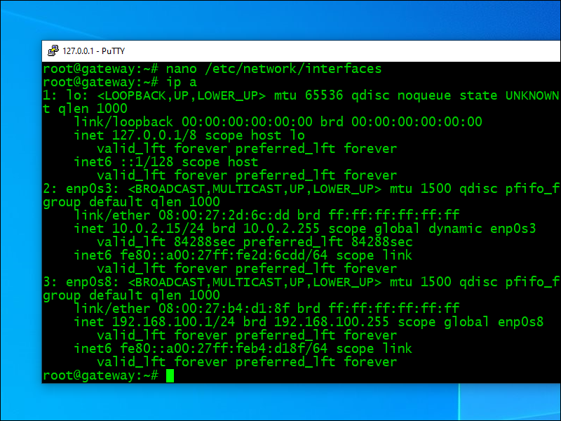
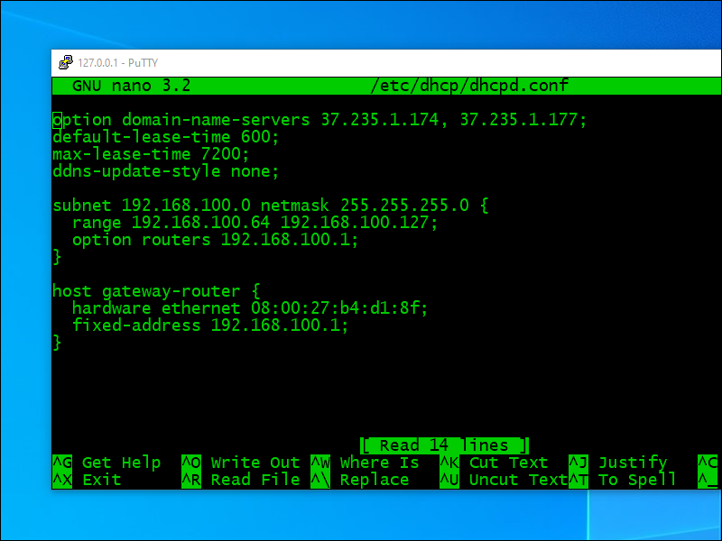
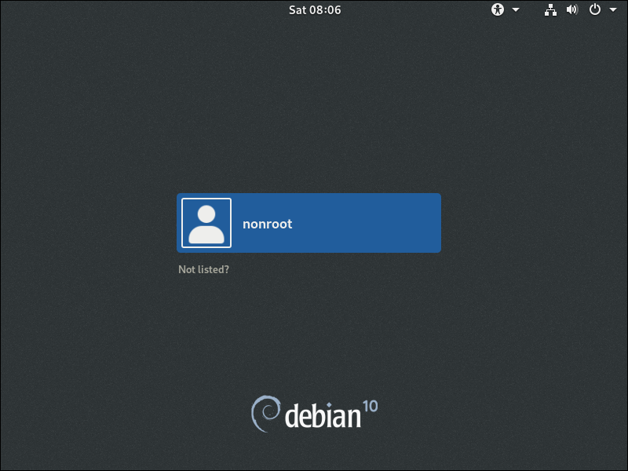

Double VPN for Windows Users
This tutorial is for users who want privacy without the high security of Whonix. The design is inspired by part 6 of the Mirimir Advanced Privacy and Anonymity series, originally published in 2013.
In this configuration:
- Your host computer connects to VPN1
- A gateway VM connects to VPN2, which is tunneled through VPN1
- You do all your work on a workstation VM
The workstation VM has no direct connection to the Internet. All its traffic is forced to go, via an internal network, through the gateway VM.
With two different VPNs, no single party sees both your IP address and your destination site. VPN1 sees only your origin, and VPN2 sees only your destination.
1. Initial Set Up
1.1. Install VirtualBox
The host is a Windows PC running VirtualBox. If you don’t have VirtualBox already, install it now from the VirtualBox website.
1.2. Install PuTTY
It is recommended that you install PuTTY so that you can SSH into a running virtual machine.
1.3. Create Email Accounts
You’re going to use two anonymous VPNs. Assuming you want to be as private as possible, you’ll typically need two anonymous email accounts, one for each VPN. I say typically because almost all VPN providers require you to register with an email address. Occasionally you’ll find one who lets you pay cash or cryptocurrency with just an account number.
In the 2013 article, Mirimir mentioned AnonBox and VFEmail as possible email providers. Some other providers you might consider are Guerrilla Mail, Tutanota, Daniel, and Hushmail.
1.4. Create VPN Accounts
You need two completely separate VPN providers in different countries for maximum anonymity. Some privacy-focused providers you might consider are IVPN, Mullvad, and AirVPN. SecurityKISS, mentioned in the original article, discontinued its VPN service in May 2020.
As you search for suitable VPN providers, your selection criteria might include the possibility of anonymous payment and support for Linux clients. When you do your search, beware of affililate pages posing as reviews. Also be skeptical of claims not to keep logs. In the past, at least one provider turned out to be dishonest in this respect. And watch out for free VPNs based in mainland China which are under the control of the Chinese Communist Party.
When you have your accounts opened for VPN1 and VPN2, download the two configuration files to your host PC. We’ll call them vpn1.ovpn and
vpn2.ovpn in our examples.
1.5. Select DNS Providers
The Mirimir tutorial placed great emphasis on the privacy of your DNS requests.
On the Windows host, your DNS servers will often be pushed to you by your VPN provider. If your VPN provider does not push DNS servers, your Windows host will fall back to its existing DNS servers.
While it is possible to get the Linux gateway to accept pushed DNS servers, in this tutorial we will keep things simple. We will specify our DNS servers directly on the Linux gateway and workstation.
In the 2013 article, Mirmir recommended you choose from the third-party DNS servers listed by WikiLeaks or JonDoNYM. You could alternatively choose any other DNS provider of your choice, e.g. Google, Cloudflare, Quad9, etc.
We use the following in the examples later on:
- The gateway VM uses DNS servers
208.67.222.222and208.67.220.220 - The workstation VM uses DNS servers
37.235.1.174and37.235.1.177
These are just examples. You can make your own choices after you have done your research.
1.6. Configure VPN1
At this stage, you have all the information you need to configure the VPN1 client on your host PC.
The procedure for installing the VPN client will vary, depending on which client software and which VPN provider you chose. Some providers recommend you use the generic OpenVPN client, while others have their own client.
- If you are using the generic OpenVPN client, then install it now from the OpenVPN website using the Windows 64-bit installer. Once it’s running, find the OpenVPN GUI icon in the system tray, right-click, and select Import
file. Then import
vpn1.ovpn. - If your provider has their own client, then follow your provider’s instructions to configure VPN1 on your host PC.
You could test connecting to VPN1 now if you want to. Either follow your provider’s intrsuctions, or again find the OpenVPN GUI icon in the system tray, right-click, and select Connect.
After testing the connection from your browser, disconnect VPN1 (unless you want to leave it running for all the remaining steps).
2. Download and Verify Debian Installer
We are going to use Debian for both the gateway VM and the workstation VM. Therefore we start by downloading a Debian ISO. We will use the same ISO for both virtual machines.
2.1. Download Debian Net Installer
Open Firefox and visit the Debian CD page.
Download the latest version of the 64-bit Debian Net Installer. At the time of writing it is named debian-10.5.0-amd64-netinst.iso, and we will use
this name in our sample commands. It may have changed by the time you read this tutorial. The current CD ISO file is a 350 MB download.
2.2. Verify Debian Net Installer
Also from the Debian CD page, view the checksum file
SHA512SUMS.
You will see that there is a line in it giving the expected checksum for debian-10.5.0-amd64-netinst.iso.
Calculate the actual SHA512 checksum of the ISO by opening Windows PowerShell (right-click on start menu, then select Windows PowerShell) and issuing the commands:
cd Downloads
Get-FileHash -Algorithm sha512 debian-10.5.0-amd64-netinst.iso
Compare the expected SHA512 checksum with the actual SHA512 checksum. They should be identical.
Close Windows PowerShell.
3. Set Up Gateway
3.1. Create Gateway VM
Create a new virtual machine in VirtualBox (Machine > New).
- Name the machine
Gateway. - Type is Linux, and version is Debian 64-bit.
- The recommended minimum hardware for Debian with no desktop is 512 MB RAM. To avoid running out of resources, it is better to specify 1024 MB (1 GB) of RAM.
- 4 GB of hard disk will be enough.
Do not start the machine just yet! Click Settings. On the Network page, go to the tab for Adapter 2. We are going to add a second network interface card.
- Check Enable Network Adapter.
- Sepecify that it is attached to Internal Network.
- Name the internal network
intnet. - Click OK.
3.2. Install Debian on Gateway VM
Now you can start the gateway VM. The start-up disk is debian-10.5.0-amd64-netinst.iso (or whatever the ISO is named at the time you run this
tutorial).
- Select Graphical install, and press Enter
- Select English or another language, and click Continue
- Select United States or another country, and click Continue
- Select American English or another keyboard, and click Continue
- Select the NAT interface as your primary network interface (on my machine it was named
enp0s3), and click Continue - For hostname, put
gateway, and click Continue - Leave domain name blank, and click Continue
- Enter and reenter a root password, and click Continue
- Enter the name of your nonroot user, and click Continue
- Enter a username for your nonroot user, and click Continue
- Enter and reenter a password for your nonroot user, and click Continue
- Select your timezone, and click Continue
- For partitioning, select Guided use entire disk, and click Continue
- Select your only disk, and click Continue
- Select All files in one partition, and click Continue
- Select Finish partitioning and write changes to disk, and click Continue
- When asked to confirm that you want changes written to disk, change the radio button from No to Yes, and click Continue
- When asked if you want to scan another CD, leave the selection at No, and click Continue
- Select your preferred country for the Debian mirror, and click Continue
- If there are multiple mirrors in that country, select your preferred mirror, and click Continue
- Leave the HTTP proxy blank (unless you need a proxy to reach the Internet), and click Continue
- For the package popularity contest, leave the selection at No, and click Continue
- For software selection, check SSH server, uncheck everything else, and click Continue
- When asked if you want to install GRUB boot loader to the master boot record, leave the selection at Yes, and click Continue
- Select your only disk for the GRUB boot loader, and click Continue
- When installation is complete, click Continue
3.3. Initial Login
The gateway VM boots for the first time. From the virtual machine console, login as root, with the root password you specified during the install.
Get your system up to date by issuing the commands:
apt update
apt upgrade
Now add your nonroot user to the list of users who can issue root commands:
apt install sudo
usermod -aG sudo myuserid
In the above command, replace myuserid by your actual nonroot user id.
Allow your root user to SSH into the server by editing the SSH daemon configuration:
nano /etc/ssh/sshd_config
Uncomment and modify the PermitRootLogin line, so that root login is allowed:
PermitRootLogin yes
Save the file. In the nano editor, that’s Ctrl+o, Enter, and Ctrl+x.
Restart the SSH daemon with your revised configuration:
systemctl restart sshd
Now we have finished using the console. From now on, we will SSH into the gateway VM from the host:
exit
Minimize the console window, but leave the VM running.
3.4. SSH into Gateway VM
An SSH client offers more facilities than the console. In particular, it’s easier to copy and paste. You could use PuTTY, Xshell, or Windows PowerShell as your SSH client. In the examples in this tutorial we are going to use PuTTY.
We have to set up port forwarding to allow you to SSH into a VirtualBox VM. In VirtualBox, open the settings for the Gateway VM. Go to the Network page. Expand the Advanced settings for Adapter 1. Click Port Forwarding. Add a new rule like this:
- The Name is
Gateway SSH - The Protocol is TCP.
- The Host IP is
127.0.0.1 - The Host Port is some port number that is not being used for anything else, for example
1522 - The Guest IP is
10.0.2.15(the IP address of the guest from VirtualBox’s point of view) - The Guest Port is
22 - Click OK.
- Click OK.
Open PuTTY. Specify Host Name 127.0.0.1 and Port 1522. Click Save. Then click Open.
Log in as root, with the root password you specified during the install.
3.5. Configure Networking
Specify the DNS servers for the gateway VM. There are actually multiple ways that nameservers may be set in Debian, as described on the Debian networking page. In our simple case, they are set in
/etc/resolv.conf. Edit that file:
nano /etc/resolv.conf
Replace the nameservers from the host by your preferred nameservers. For example:
nameserver 208.67.222.222
nameserver 208.67.220.220
Note that you can copy lines of text from the host with Ctrl+c, then paste them into PuTTY by right-clicking where you want them to go.
Save the file. We’ll need to restart networking for this change, but we’ll do that in a moment.
Now take a look to see how your network interfaces have been configured. In your PuTTY session with the gateway, issue the command:
ip a
Note down the information for the internal network. It will have a name such as enp0s8 but few other details.
Edit the network interfaces file:
nano /etc/network/interfaces
Make your interfaces look like this. In the example, we have decided we will us the subnet 192.168.100.0/24 for the internal network.
source /etc/network/interfaces.d/*
auto lo
iface lo inet loopback
auto enp0s3
iface enp0s3 inet dhcp
auto enp0s8
iface enp0s8 inet static
address 192.168.100.1
netmask 255.255.255.0

Save the file. Now restart networking with all your changes:
systemctl restart networking
Check your IP addresses:
ip a

Your internal network interface should now have the IP address 192.168.100.1.
3.6. Configure Forwarding
Next we allow the gateway to act as a router and forward packets. Edit the system control configuration file:
nano /etc/sysctl.conf
Uncomment the line:
net.ipv4.ip_forward=1
Save the file. Make this change effective:
sysctl -p /etc/sysctl.conf
3.7. Enable Masquerading
Enable masquerading of the source IP address on forwarded packets. Install the firewall we will use for masquerading:
apt install nftables -y
systemctl enable nftables
systemctl start nftables
First we will add some basic firewall rules. These restrict input to related traffic, the loopback interface, SSH from the host, and any requests originating from the internal network:
nft add rule inet filter input ct state related,established counter accept
nft add rule inet filter input iif lo counter accept
nft add rule inet filter input tcp dport 22 ip saddr 10.0.2.2 counter accept
nft add rule inet filter input ip saddr 192.168.100.0/24 counter accept
nft add rule inet filter input counter drop
Now we add the firewall rules for Network Address Translation (NAT) with masquerading:
nft add table nat
nft add chain nat prerouting { type nat hook prerouting priority 0 \; }
nft add chain nat postrouting { type nat hook postrouting priority 100 \; }
nft add rule nat postrouting masquerade
Save the firewall rules so that they persist across reboots:
nft list ruleset > /etc/nftables.conf
3.8. Install and Configure DHCP Server
The gateway VM will act as a Dynamic Host Configuration Protocol (DHCP) server for the internal network. Install the DHCP server software package:
apt install isc-dhcp-server -y
There will be some errors when it starts, as you have not done the configuration yet.
Now you need to see your interface details again. Issue the command:
ip a
Note down the information for the internal network interface. For example, it might be interface name enp0s8 with MAC address
08:00:27:b4:d1:8f.
Edit the DHCP server defaults file:
nano /etc/default/isc-dhcp-server
Delete the existing lines. Insert a new line specifying that we will act as DHCP server for the internal network. Continuing our example of an interface named
enp0s8:
INTERFACESv4="enp0s8"
Save the file. Next, we edit the DHCP daemon configuration file. Make a backup, empty the existing file, then edit it.
cp /etc/dhcp/dhcpd.conf /etc/dhcp/dhcpd.conf.bak
> /etc/dhcp/dhcpd.conf
nano /etc/dhcp/dhcpd.conf
Insert the template that follows, but with these substitutions:
- Replace
37.235.1.174and37.235.1.177by your choices for DNS servers (these should never be used, since all traffic on the workstation goes through the gateway VM) - Replace
192.168.100.0by your choice of subnet for the DHCP server - Replace the range of IP addresses to be given to clients (
192.168.100.64through192.168.100.127in the template) by your own chioce - Replace the
192.168.100.1as the fixed address for the gateway by your own choice - Replace
08:00:27:fd:27:77by your actual internal network interface MAC address
Here is the template for you to copy from and adjust:
option domain-name-servers 37.235.1.174, 37.235.1.177;
default-lease-time 600;
max-lease-time 7200;
ddns-update-style none;
subnet 192.168.100.0 netmask 255.255.255.0 {
range 192.168.100.64 192.168.100.127;
option routers 192.168.100.1;
}
host gateway-router {
hardware ethernet 08:00:27:b4:d1:8f;
fixed-address 192.168.100.1;
}

Save the file. Start the DHCP server:
systemctl enable isc-dhcp-server
systemctl start isc-dhcp-server
This time it should start without errors and be running:
systemctl status isc-dhcp-server
3.9. Upload VPN2 Configuration
Since you have installed PuTTY, you can use the pscp.exe utility that comes with it to upload the vpn2.ovpn file to your gateway VM.
On your Windows host, do Win+r to get a run box. Type cmd. Press Enter. A Windows command prompt
window opens. Enter the command:
"C:\Program Files\PuTTY\pscp.exe" -P 1522 Downloads\vpn2.ovpn root@127.0.0.1:vpn2.ovpn
Enter your root password.
When the upload is done, close your Windows command prompt window.
Back in your PuTTY session with the gateway, you can see your uploaded file with the command:
ls -l
You should see your vpn2.ovpn file, uploaded a moment ago.
3.10. Install OpenVPN on Gateway
Install the OpenVPN package on the gateway VM. In your PuTTY session with the gateway, issue the command:
apt install openvpn -y
You can exit your PuTTY session for now.
exit
4. Set Up Workstation
4.1. Create Workstation VM
Create a new virtual machine in VirtualBox (Machine > New).
- Name the machine
Workstation. - Type is Linux, and version is Debian 64-bit.
- The recommended minimum hardware for Debian with desktop is 2048 MB (2 GB) of RAM. You can give it more if you have the capacity on the host and you will be doing a lot of work on the workstation.
- How much diskspace you need depends on how much work you will do on the workstation. A reasonable allowance for a moderate user might be 20 GB of hard disk.
Create the machine, but do not start it just yet! Click Settings. On the Network page, go to the tab for Adapter 1. We are going to use only the internal network. This machine must not be attached to the NAT network!
- Make sure Enable Network Adapter is checked.
- Make it attached to Internal Network.
- The name of the internal network is
intnet. - Click OK.
4.2. Install Debian on Workstation VM
Now you can start the Workstation VM from the debian-10.5.0-amd64-netinst.iso start-up disk.
- Select Graphical install, and press Enter
- Select English or another language, and click Continue
- Select United States or another country, and click Continue
- Select American English or another keyboard, and click Continue
- The internal network is your only network interface, and it should be configured automatically without asking you any further questions
- For hostname, put
workstation, and click Continue - Leave domain name blank, and click Continue
- Enter and reenter a root password, and click Continue
- Enter the name of your nonroot user, and click Continue
- Enter a username for your nonroot user, and click Continue
- Enter and reenter a password for your nonroot user, and click Continue
- Select your timezone, and click Continue
- For partitioning, select Guided use entire disk, and click Continue
- Select your only disk, and click Continue
- Select All files in one partition, and click Continue
- Select Finish partitioning and write changes to disk, and click Continue
- Change the radio button from No to Yes to write the changes to disk, and click Continue
- For scan another CD, leave the selection at No, and click Continue
- Select your preferred country for the Debian mirror, and click Continue
- If there are multiple mirrors in that country, select your preferred mirror, and click Continue
- Leave the HTTP proxy blank (unless you need a proxy to reach the Internet), and click Continue
- For the package popularity contest, leave the selection at No, and click Continue
- For software selection, uncheck everything, then check Debian desktop environment and GNOME, and click Continue
- Wait a while for GNOME desktop to be installed, then when asked if you want to install GRUB boot loader, leave the selection at Yes, and click Continue
- Highlight your disk for the GRUB boot loader, and click Continue
- When installation is complete, click Continue
4.3. Initial Login
After the boot sequence is complete, the GNOME desktop graphical login screen appears.
Log in to your nonroot user account using the password you set for the nonroot user.
To make the screen bigger, right-click on the desktop, and select Display Settings. You might have to drag the window left so you can see the
choices. Choose, for example, 1024x768. Click Apply. Click Keep changes. Close the settings window. Now your display is
a bit bigger.
To get a terminal, click Activities and search for terminal. Open GNOME terminal. To change the colors, do Edit >
Preferences > Colors.
Switch to the root user for the next few steps:
su -
You will be asked to enter the root password you specified during the install.
Get your system up to date by issuing the commands:
apt update
apt upgrade
Add your nonroot user to the list of users who can issue root commands:
apt install sudo
usermod -aG sudo myuserid
Replace myuserid in the above by your actual nonroot user id.
Exit your root session:
exit
Exit your nonroot session:
exit
Now log out of your the workstation (button, top right). You do not need to completely power off the VM. Then log back in again as the nonroot user, so your new
sudo group membership will be effective.
Open a terminal again. Install the GNOME tweak tool. As a nonroot user, you will have to prefix your root commands with sudo:
sudo apt install gnome-tweak-tool
After the install, close the terminal. From Activities, search for tweak. Open Tweaks. On the Windows
Titlebar page, toggle on the Maximize and Minimize titlebar buttons. Close the GNOME tweak tool.
4.5. Configure Firefox
From the Activities menu, open Firefox (it is already in your Favorites dock on the left-hand side of the GNOME desktop). From the Firefox hamburger menu, select Preferences:
- On the Home tab, change homepage and new tabs default to blank page
- On the Search tab, change default search engine to DuckDuckGo
- On the Privacy & Security tab, uncheck the option that remembers logins and passwords, and uncheck Firefox data collection
From the Firefox hamburger menu, select Add-ons, then search for and install these extensions:
- uBlock Origin by Raymond Hill
- Privacy Badger by EFF Technologists
- HTTPS Everywhere by EFF Technologists
If you require more security and you are willing to spend time whitelisting domains that you trust, also install NoScript Security Suite by Giorgio Maone.
Close Firefox for now. Click Close Tabs if necessary.
5. End-to-End Test
On the host PC, find the OpenVPN icon in the system tray. Right-click. Select Connect. Allow a few seconds for VPN1 to connect.
From a browser on the host, visit IP Chicken. You should see the VPN1 server IP address.
Open the gateway VM console. Log in as root. Turn on VPN2 like this:
openvpn --config vpn2.ovpn
Allow a few seconds for it to connect. You should see a message, Initialization Sequence Completed.
Minimize the console window, but leave it logged in with VPN2 running.
Now go to workstation VM. Open Firefox again. Test your connection from the workstation all the way to a website. In particular, visit IP Chicken. You should see the VPN2 server IP address. You are therefore reaching VPN2 through your VPN1 tunnel.
6. Take Snapshot
Taking a VM snapshot at this point will give you a restore point to a fully configured but unused workstation.
- In the workstation GNOME desktop, power off the workstation
- In VirtualBox, select the Workstation VM
- From the VirtualBox menu, do Snapshot > Take
- Give it a name such as
Fresh install, and click OK - Power on the Workstation VM again
- Log in to the workstation as your nonroot user
You can restore from the Fresh install snapshot any time you want a clean workstation.
7. Get Help and Report Issues
Here are some avenues for support:
Updated 2020-09